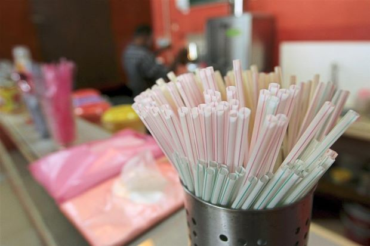

Malaysians still big consumers of plastic despite ban
PETALING JAYA: Despite the looming total ban on single-use plastics and the country’s reputation as the plastic waste capital of the world, Malaysians are still big consumers of straws and bags, a survey has found.
According to a study by prominent survey group YouGov Omnibus, at least one in five (22%) out of the 1,013 Malaysians polled used plastic straws daily.
At the same time, a whopping 91% agreed that conserving the environment was important.
The survey also showed that about 10% – or one in 10 Malaysians – admitted to using straws several times a day while 12% – or one in eight – used these once daily.
Thirty-one per cent used straws several times a week and 13% used them once a week.
With the use of straws still high, at least 25% of those asked in the poll said they had their own reusable straws.
However, 32% of Malaysians in the poll felt that they did not see the need to use reusable straws while another 27% found it inconvenient to carry one around.
Those aged 35 to 44 as well as people without a university degree were more likely to have their own reusable straws.
The most popular reason given for not having reusable straws – they did not know where to get one.

The survey also found that 24% of those polled used plastic bags at least once a day.
However, when making purchases, 67% would sometimes refuse plastic bags while 21% did not ask for these. Only one in eight – or 12% – always took a plastic bag with their purchases.
While 91% of those polled agreed that it was important to conserve the environment, 44% also felt that it was the government which had the biggest role to play.
This was followed by consumers (37%), non-governmental organisations (10%) and businesses (9%).
Asia Pacific YouGov Omnibus chief Jake Gammon said while most Malaysians believed in preserving the environment, data showed that many relied heavily on single-use plastics on a daily basis.
“Many Malaysians are looking to the government to reduce plastic waste and conserve the environment as a whole,”
Asia Pacific YouGov Omnibus chief Jake Gammon
Under the Energy, Science, Technology, Environment and Climate Change Ministry’s Roadmap Towards Zero Single-use Plastics, there will be no more drinking straws and plastic carrier bags by 2030.The plan will see local councils imposing a “pollution charge” and a “no straw by default” policy. Many local councils in the Federal Territory as well as Johor and Sarawak are already slowly phasing out single-use plastics, starting with straws. According to a 2015 study in Science Magazine, Malaysia is the eighth worst country worldwide for plastic waste.